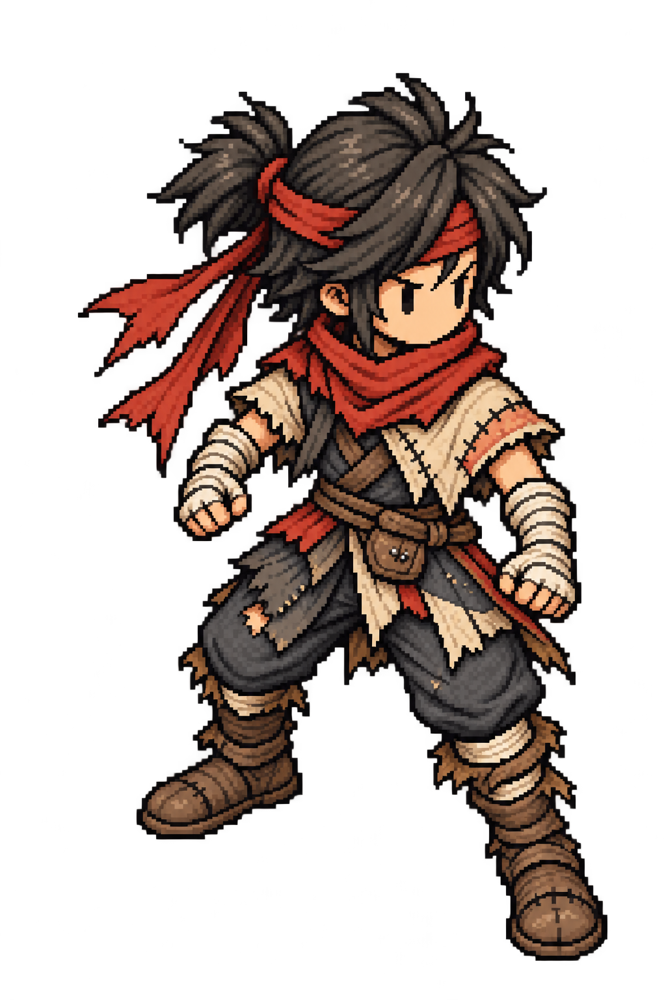

CROWNLESS / ART REVIEW
主人公の原画は確認済みです。同じ顔・髪・服を保った歩行4コマを作りました。立ち止まると原画に戻ります。

歩行を止める
承認済み主人公を参照して画像生成し、Pixeloramaで読み込み・書き出した候補です。元画像は1024×1536px。64×96pxの完成したドット素材や、パーツ別アニメーションとしては扱っていません。
編集用OpenRaster原画と、歩行4フレームを編集できるAseprite形式のデータを保存しています。攻撃・被弾の専用アニメと、新しい装飾は次の工程です。